Estimating zones of influence in resource selection functions using bagging and penalized regression
Bernardo Niebuhr
Source:vignettes/fitting_ZOI_logit.Rmd
fitting_ZOI_logit.RmdIntro
Add something introducing the idea of penalized regression in this context
Here we reanalyze the resource selection function fitted to reindeer movement data from the Hardangervidda wild reindeer population, used in Niebuhr et al. 2023 to estimate the zone of influence (ZOI) and the cumulative impacts of tourism infrastructure on reindeer habitat selection during summer.
The data comprises GPS positions from 115 female reindeer, recorded with a 3h fix rate. The data was put into a use-availabililty design, with 1 used location for each 9 random locations distributed over the limits of the wild reindeer area. The data was intersected with environmental variables on land cover, four PCAs representing bio-geo-climatic variation, and (the ZOI of the nearest infrastructure and remove from this tutorial) the cumulative ZOI of infrastructure types. The infrastructures considered were private cottages and public tourist resorts. More information about the cumulative ZOI approach, the data collection, and the data preparation for analysis might be found in Niebuhr et al. 2023.

Here we show the workflow for preparing the data, fitting a conditional logistic regression model to it, and checking model fits combining bootstrap aggregation (bagging) and penalized regression. In a bootstrap aggregation setup, the model is repeatedly fitted to a subset of the full data set and model fits are aggregated into a bag (a group of models). Each model model is based on a different sub-set (a resample) of the full data set, allowing variation among them and the estimation of uncertainty on the model parameters. The penalized regression approach allows us to perform model fitting and variable selection within the same procedure. For each resample the data is split into a fitting/train set, used to fit the individual model with multiple possible penalty parameters, and a tuning/test set, used to calibrate the model, i.e. to select the most parsimonious penalty parameter, used then to determine the best fitted model.
Penalized regression might be fitted using different approaches, such
as Ridge, Lasso, and Adaptive Lasso. Ridge regression shrinks the
parameters toward zero, but still keep all of them in the final fitted
model. Lasso (and Adaptive Lasso) allow for variable selection as well,
potentially removing unimportant variables from the fitted model.
Adaptive Lasso allows for different coefficients being penalized
differently and is therefore more flexible than Ridge and Lasso. The
oneimpact package offers different “flavors” of Adaptive
Lasso, by allowing different ways to set the prior penalties to the
different ZOI and non-ZOI variables. For the purpose of this vignette,
we exemplify the approach through Adaptive Lasso regression.
Preparing the data and the model
We start by loading the packages and the annotated data, already prepared for analysis. For details on the preparation of biological and environmental/zone of influence data and data annotation workflow, please check Niebuhr et al. 2023.
## Loading required package: Matrix## Loaded glmnet 4.1-9
library(ggplot2) # for plotting
library(tmap) # for plotting maps
library(terra) # for spatial predictions## terra 1.8.54##
## Attaching package: 'oneimpact'## The following object is masked from 'package:terra':
##
## predict## The following objects are masked from 'package:glmnet':
##
## Cindex, coxnet.deviance## The following object is masked from 'package:stats':
##
## predict
# load data
data("reindeer_rsf")
# rename it just for convenience
dat <- reindeer_rsf
# explore columns
colnames(dat)## [1] "use"
## [2] "norway_pca_klima_axis1"
## [3] "norway_pca_klima_axis2"
## [4] "norway_pca_klima_axis3"
## [5] "norway_pca_klima_axis4"
## [6] "norway_pca_klima_axis1_sq"
## [7] "norway_pca_klima_axis2_sq"
## [8] "NORUTreclass"
## [9] "private_cabins_cumulative_exp_decay100"
## [10] "private_cabins_cumulative_exp_decay250"
## [11] "private_cabins_cumulative_exp_decay500"
## [12] "private_cabins_cumulative_exp_decay1000"
## [13] "private_cabins_cumulative_exp_decay2500"
## [14] "private_cabins_cumulative_exp_decay5000"
## [15] "private_cabins_cumulative_exp_decay10000"
## [16] "private_cabins_cumulative_exp_decay20000"
## [17] "private_cabins_nearest_exp_decay100"
## [18] "private_cabins_nearest_exp_decay250"
## [19] "private_cabins_nearest_exp_decay500"
## [20] "private_cabins_nearest_exp_decay1000"
## [21] "private_cabins_nearest_exp_decay2500"
## [22] "private_cabins_nearest_exp_decay5000"
## [23] "private_cabins_nearest_exp_decay10000"
## [24] "private_cabins_nearest_exp_decay20000"
## [25] "public_cabins_high_cumulative_exp_decay100"
## [26] "public_cabins_high_cumulative_exp_decay250"
## [27] "public_cabins_high_cumulative_exp_decay500"
## [28] "public_cabins_high_cumulative_exp_decay1000"
## [29] "public_cabins_high_cumulative_exp_decay2500"
## [30] "public_cabins_high_cumulative_exp_decay5000"
## [31] "public_cabins_high_cumulative_exp_decay10000"
## [32] "public_cabins_high_cumulative_exp_decay20000"
## [33] "public_cabins_high_nearest_exp_decay100"
## [34] "public_cabins_high_nearest_exp_decay250"
## [35] "public_cabins_high_nearest_exp_decay500"
## [36] "public_cabins_high_nearest_exp_decay1000"
## [37] "public_cabins_high_nearest_exp_decay2500"
## [38] "public_cabins_high_nearest_exp_decay5000"
## [39] "public_cabins_high_nearest_exp_decay10000"
## [40] "public_cabins_high_nearest_exp_decay20000"
## [41] "roads_low_cumulative_exp_decay100"
## [42] "roads_low_cumulative_exp_decay250"
## [43] "roads_low_cumulative_exp_decay500"
## [44] "roads_low_cumulative_exp_decay1000"
## [45] "roads_low_cumulative_exp_decay2500"
## [46] "roads_low_cumulative_exp_decay5000"
## [47] "roads_low_cumulative_exp_decay10000"
## [48] "roads_low_cumulative_exp_decay20000"
## [49] "roads_low_nearest_exp_decay100"
## [50] "roads_low_nearest_exp_decay250"
## [51] "roads_low_nearest_exp_decay500"
## [52] "roads_low_nearest_exp_decay1000"
## [53] "roads_low_nearest_exp_decay2500"
## [54] "roads_low_nearest_exp_decay5000"
## [55] "roads_low_nearest_exp_decay10000"
## [56] "roads_low_nearest_exp_decay20000"
## [57] "roads_high_cumulative_exp_decay100"
## [58] "roads_high_cumulative_exp_decay250"
## [59] "roads_high_cumulative_exp_decay500"
## [60] "roads_high_cumulative_exp_decay1000"
## [61] "roads_high_cumulative_exp_decay2500"
## [62] "roads_high_cumulative_exp_decay5000"
## [63] "roads_high_cumulative_exp_decay10000"
## [64] "roads_high_cumulative_exp_decay20000"
## [65] "roads_high_nearest_exp_decay100"
## [66] "roads_high_nearest_exp_decay250"
## [67] "roads_high_nearest_exp_decay500"
## [68] "roads_high_nearest_exp_decay1000"
## [69] "roads_high_nearest_exp_decay2500"
## [70] "roads_high_nearest_exp_decay5000"
## [71] "roads_high_nearest_exp_decay10000"
## [72] "roads_high_nearest_exp_decay20000"
## [73] "trails_cumulative_exp_decay100"
## [74] "trails_cumulative_exp_decay250"
## [75] "trails_cumulative_exp_decay500"
## [76] "trails_cumulative_exp_decay1000"
## [77] "trails_cumulative_exp_decay2500"
## [78] "trails_cumulative_exp_decay5000"
## [79] "trails_cumulative_exp_decay10000"
## [80] "trails_cumulative_exp_decay20000"
## [81] "trails_nearest_exp_decay100"
## [82] "trails_nearest_exp_decay250"
## [83] "trails_nearest_exp_decay500"
## [84] "trails_nearest_exp_decay1000"
## [85] "trails_nearest_exp_decay2500"
## [86] "trails_nearest_exp_decay5000"
## [87] "trails_nearest_exp_decay10000"
## [88] "trails_nearest_exp_decay20000"The data set “reindeer_rsf” in the oneimpact package
contains the wild reindeer data used to fit the resource selection
functions using the cumulative ZOI approach in Niebuhr et al. 2023. The
response variable use is a binary variable showing whether
a given location was used (1) or not (0, a random location within the
population area). The used and available positions were annotated with
information on land cover (column NORUTreclass),
bio-geo-climatic PCAs (columns norway_pca_klima_axis 1 to
4) and the zone of influence of private cottages and public resorts
(columns starting with private_cabins and
public_cabins_high, respectively). Zone of influence
variables include both the ZOI of the nearest feature and the cumulative
ZOI, with radii from 100 m to 20 km. For illustration, we only kept ZOI
variables with exponential decay shape and cumulative type (not
nearest).
The predictor variables are not standardized, but it is essential to standardize them for penalized regression. The standardization can be done in advance or directly within the model fitting procedure (as we do it here).
Model specification
We start by defining the structure of the model to be fitted - the
formula, in R terminology. To do that, we make use of the
function oneimpact::add_zoi_formula() to make it easier to
add the ZOI metrics with multiple radii in the formula.
# formula initial structure
f <- use ~ private_cabins_XXX + public_cabins_high_XXX +
NORUTreclass +
# poly(norway_pca_klima_axis1, 2, raw = TRUE) +
# poly(norway_pca_klima_axis2, 2, raw = TRUE) +
norway_pca_klima_axis1 + norway_pca_klima_axis1_sq +
norway_pca_klima_axis2 + norway_pca_klima_axis2_sq +
norway_pca_klima_axis3 + norway_pca_klima_axis4
# add ZOI terms to the formula
zois <- c(100, 250, 500, 1000, 2500, 5000, 10000, 20000)
ff <- add_zoi_formula(f, zoi_radius = zois, pattern = "XXX",
type = c("cumulative_exp_decay"),
separator = "", predictor_table = TRUE)
# get formula
f <- ff$formula
# predictor_table for usage later to map ZOI-like type variables
predictor_table_zoi <- ff$predictor_tableContrary to the traditional sub-set modeling approaches, in which only one ZOI predictor with a specific radius is kept in the model at a time and multiple models are fitted and compared, here we keep all the terms in the formula and use a penalized regression approach to both fit the model and select the variables.
f## use ~ private_cabins_cumulative_exp_decay100 + private_cabins_cumulative_exp_decay250 +
## private_cabins_cumulative_exp_decay500 + private_cabins_cumulative_exp_decay1000 +
## private_cabins_cumulative_exp_decay2500 + private_cabins_cumulative_exp_decay5000 +
## private_cabins_cumulative_exp_decay10000 + private_cabins_cumulative_exp_decay20000 +
## public_cabins_high_cumulative_exp_decay100 + public_cabins_high_cumulative_exp_decay250 +
## public_cabins_high_cumulative_exp_decay500 + public_cabins_high_cumulative_exp_decay1000 +
## public_cabins_high_cumulative_exp_decay2500 + public_cabins_high_cumulative_exp_decay5000 +
## public_cabins_high_cumulative_exp_decay10000 + public_cabins_high_cumulative_exp_decay20000 +
## NORUTreclass + norway_pca_klima_axis1 + norway_pca_klima_axis1_sq +
## norway_pca_klima_axis2 + norway_pca_klima_axis2_sq + norway_pca_klima_axis3 +
## norway_pca_klima_axis4
## <environment: 0x55dae10cdfe8>The add_zoi_formula() function can also produce a
predictor_table data.frame, which specifies
characteristics of the covariates in the model - e.g. whether they are
ZOI metrics or not, which type (cumulative, nearest), and which radii.
This is helpful to treat the ZOI variables differently in the model
interpretation, to aggregate ZOI terms related to the same type of
infrastructure, and also to define the term penalties in the different
flavors of “Adaptive Lasso” approaches.
Here we take a glance on the structure of this table:
head(predictor_table_zoi, 10)## is_zoi cumulative shape zoi_radius variable
## 1 1 cumulative exp_decay 100 private_cabins_
## 2 1 cumulative exp_decay 250 private_cabins_
## 3 1 cumulative exp_decay 500 private_cabins_
## 4 1 cumulative exp_decay 1000 private_cabins_
## 5 1 cumulative exp_decay 2500 private_cabins_
## 6 1 cumulative exp_decay 5000 private_cabins_
## 7 1 cumulative exp_decay 10000 private_cabins_
## 8 1 cumulative exp_decay 20000 private_cabins_
## 9 1 cumulative exp_decay 100 public_cabins_high_
## 10 1 cumulative exp_decay 250 public_cabins_high_
## term_zoi
## 1 private_cabins_cumulative_exp_decay100
## 2 private_cabins_cumulative_exp_decay250
## 3 private_cabins_cumulative_exp_decay500
## 4 private_cabins_cumulative_exp_decay1000
## 5 private_cabins_cumulative_exp_decay2500
## 6 private_cabins_cumulative_exp_decay5000
## 7 private_cabins_cumulative_exp_decay10000
## 8 private_cabins_cumulative_exp_decay20000
## 9 public_cabins_high_cumulative_exp_decay100
## 10 public_cabins_high_cumulative_exp_decay250Setting samples
As in several machine learning workflows, we partition the data into
sets used to fit (or train) the model, calibrate (or tune/test), and
validate. Here this is done within a bootstrap aggregation (bagging)
procedure, so in general only part of the data is used at a time. We use
the function oneimpact::create_resamples() for this
purpose, where we define the number of times we’ll resample (i.e., the
size of the bag, parameter times) and the proportion of the
data observations that goes into fitting, calibration, and validation
(parameter p) in each resample. For simplicity, we perform
random sampling here, but the sampling can also be spatially
stratified.
# sampling - random sampling
set.seed(1234)
samples <- create_resamples(y = dat$use,
p = c(0.2, 0.2, 0.2),
times = 50,
colH0 = NULL)## [1] "Starting random sampling..."When there is no spatial stratification, the object
samples is a list of three elements: a list of sets
(defined by the row numbers in the original data set) that will be used
for (i) model fitting (samples$train), for (ii) variable
selection/calibration (samples$test), and for (iii) model
validation (samples$validate).
str(samples, max.level = 1)## List of 3
## $ train :List of 50
## $ test :List of 50
## $ validate:List of 50Fitting the model
To fit one single model (e.g. the one corresponding to the first
resample above) using logistic penalized regression, we can use the
function oneimpact::fit_net_logit() which calls
glmnet::glmnet() for the fitting procedure. We give an
example below. By default, a Lasso fit is performed, but the
method parameter might be used to change it for a Ridge or
Adaptive Lasso regression. Notice that observations with missing values
in the data resamples need to be removed before fitting, so the actual
number of observations used for fitting, calibration, and validation
might be actually smaller than it was set. A warning message is printed
in these cases; but we recommend that missing data is checked in
advance.
# dat2 <- dat
# dat$public_cabins_high_cumulative_exp_decay_1000 <- 0
mod <- fit_net_logit(f,
data = dat,
samples = samples,
i = 1,
metric = "AUC",
method = "Lasso")## Warning in fit_net_logit(f, data = dat, samples = samples, i = 1, metric =
## "AUC", : 100 missing observations were removed from the train set. 14767
## observations were kept.## Warning in fit_net_logit(f, data = dat, samples = samples, i = 1, metric =
## "AUC", : 69 missing observations were removed from the test set. 14798
## observations were kept.## Warning in fit_net_logit(f, data = dat, samples = samples, i = 1, metric =
## "AUC", : 108 missing observations were removed from the validate set. 14759
## observations were kept.We will just examine the structure of the output object now. It comprises a list with:
-
parms: The initial parameters used for when callingfit_net_logit(); -
glmnet_fit: The actual output fromglmnet, a set of models with different penalty parameters; -
metrics_evaluated: The names of the metrics evaluated for setting the penalty parameterlambda, set by themetrics_evaluatedargument when callingfit_net_logit(); by default the only one is"AUC"; -
var_names: The names of the variables included in the model formula; -
numeric_covs: A vector of logical values for whether each of the covariates is numeric or not; -
covariate_mean_sd: A matrix with the mean and standard deviation for each of the covariates in the model, useful for standardizing or unstandardizing covariates and coefficients; -
metric: The name of the metric selected for model validation, here"AUC"; -
lambda: The final penalty parameterlambdaselected for the best fitted model; -
coef: The coefficients for the variables in the fitted model; -
train_score: The score of the model (i.e., the result of themetricwhen applied to) for the train/fitting set; -
train_score: The score of the model (i.e., the result of themetricwhen applied to) for the test/calibration set; -
validation_score: The score of the model (i.e., the result of themetricwhen applied to) for the validation set. If there is a hierarchical block H0 for block cross validation (e.g. representing the populations, study areas, or years; see parameterH0in the functionsspat_strat()andcreate_resamples()), this is computed for each block H0; -
validation_score_avg: Average of the validation scores across block H0, when they are present. -
lambdas: The different penalty parameters selected for each of themetrics_evaluated, when there is more than one metric; -
coefs_all,train_score_all,test_score_all,validation_score_all: The same ascoef,train_score,test_score, andvalidation_score, but for all themetrics_evaluated, when there is more than one metric.
str(mod, max.level = 1)## List of 20
## $ parms :List of 16
## $ glmnet_fit :List of 13
## ..- attr(*, "class")= chr [1:2] "lognet" "glmnet"
## $ metrics_evaluated :List of 1
## $ var_names : chr [1:36] "private_cabins_cumulative_exp_decay100" "private_cabins_cumulative_exp_decay250" "private_cabins_cumulative_exp_decay500" "private_cabins_cumulative_exp_decay1000" ...
## $ numeric_covs : Named logi [1:23] TRUE TRUE TRUE TRUE TRUE TRUE ...
## ..- attr(*, "names")= chr [1:23] "private_cabins_cumulative_exp_decay100" "private_cabins_cumulative_exp_decay250" "private_cabins_cumulative_exp_decay500" "private_cabins_cumulative_exp_decay1000" ...
## $ covariate_mean_sd :'data.frame': 22 obs. of 2 variables:
## $ metric : chr "AUC"
## $ alpha : num 1
## $ lambda : num 0.00123
## $ coef : num [1:36, 1] 0 0 0 0 0 ...
## ..- attr(*, "dimnames")=List of 2
## $ train_score : num 0.915
## $ test_score : num 0.926
## $ validation_score : num 0.913
## $ validation_score_avg: num 0.913
## $ lambdas : Named num 0.00123
## ..- attr(*, "names")= chr "AUC"
## $ coefs_all : num [1:36, 1] 0 0 0 0 0 ...
## ..- attr(*, "dimnames")=List of 2
## $ coefs_std_all :List of 1
## $ train_score_all : Named num 0.915
## ..- attr(*, "names")= chr "AUC"
## $ test_score_all : Named num 0.926
## ..- attr(*, "names")= chr "AUC"
## $ validation_score_all: Named num 0.913
## ..- attr(*, "names")= chr "AUC"Here the model was calibrated and evaluated using the Area Under the ROC curve, AUC.
However, in this approach we are interested not only in one single
model, but in bootstrapping from the whole data set and producing a bag
of models. In this case, we can use the function
oneimpact::bag_fit_net_logit() which fits all the models
and produces a list with all the outputs. After fitting, the function
oneimpact::bag_models() can be used to organize the output
of each model in a single “bag” object, of the class
bag.
Running the bag of models below can take some minutes, and the running time can be high for larger data sets and more complex models. The model fitting can be done in parallel, and also saved in external files if needed.
# fit multiple models
fittedl <- bag_fit_net_logit(f, dat,
samples = samples,
standardize = "internal", # glmnet does the standardization of covariates
metric = "AUC",
method = "Lasso",
parallel = "mclapply",
mc.cores = 8)
# bag models in a single object
bag_object <- bag_models(fittedl, dat, score_threshold = 0.7,
weights_function = w_strech_max_squared)The resulting bag of models is a list which includes the number of
models fitted n, the original formula fitted
(formula), the fitting method (method) and
validation metric (metric), a matrix of coefficients
(coef) and the fitting, calibration, and validation scores
(validation_score) for all models.
The function bag_models() also transforms the validation
scores into weights, so that the coefficients of each model might be
weighted according to how well they fit the data. Models with a
validation score below a certain threshold (parameter
score_threshold) are set to weight zero and ignored in the
final bag; the other models’ weights are transformed and normalized (to
sum 1) according to any standard or user-defined function (set by the
parameter weights_function). As a consequence, a number of
objects related to the weights and the weighted validation scores is
also present in the bag object, as well as summaries of the data that
are useful for model prediction.
str(bag_object, max.level = 1)## List of 32
## $ n : int 50
## $ formula :Class 'formula' language use ~ private_cabins_cumulative_exp_decay100 + private_cabins_cumulative_exp_decay250 + private_cabins_cumul| __truncated__ ...
## .. ..- attr(*, ".Environment")=<environment: 0x55dae10cdfe8>
## $ formula_no_strata :Class 'formula' language use ~ -1 + private_cabins_cumulative_exp_decay100 + private_cabins_cumulative_exp_decay250 + private_cabins_| __truncated__ ...
## .. ..- attr(*, ".Environment")=<environment: 0x55dae14e5ac8>
## $ method : chr "Lasso"
## $ metric : chr "AUC"
## $ metrics_evaluated : Named chr "AUC"
## ..- attr(*, "names")= chr "AUC"
## $ samples :List of 3
## $ standardize : chr "internal"
## $ errors : Named logi [1:50] FALSE FALSE FALSE FALSE FALSE FALSE ...
## ..- attr(*, "names")= chr [1:50] "Resample01" "Resample02" "Resample03" "Resample04" ...
## $ error_message : logi [1:50] NA NA NA NA NA NA ...
## $ n_errors : int 0
## $ n_no_errors : int 50
## $ parms :List of 11
## $ alpha : num 1
## $ var_names : chr [1:36] "private_cabins_cumulative_exp_decay100" "private_cabins_cumulative_exp_decay250" "private_cabins_cumulative_exp_decay500" "private_cabins_cumulative_exp_decay1000" ...
## $ lambda : num [1, 1:50] 1.23e-03 8.70e-06 1.98e-04 8.52e-06 8.76e-06 ...
## ..- attr(*, "dimnames")=List of 2
## $ weight_ref : chr "validation_score"
## $ weight_threshold : num 0.7
## $ weights : Named num [1:50] 0.0197 0.02 0.02 0.0201 0.02 ...
## ..- attr(*, "names")= chr [1:50] "Resample01" "Resample02" "Resample03" "Resample04" ...
## $ n_above_threshold : int 50
## $ coef : num [1:36, 1:50] 0 0 0 0 0 ...
## ..- attr(*, "dimnames")=List of 2
## $ wcoef : num [1:36, 1:50] 0 0 0 0 0 ...
## ..- attr(*, "dimnames")=List of 2
## $ wcoef_std : num(0)
## $ fit_score : num [1, 1:50] 0.915 0.921 0.921 0.918 0.923 ...
## ..- attr(*, "dimnames")=List of 2
## $ calibration_score : num [1, 1:50] 0.926 0.919 0.915 0.917 0.914 ...
## ..- attr(*, "dimnames")=List of 2
## $ validation_score : num [1, 1:50] 0.913 0.92 0.919 0.921 0.92 ...
## ..- attr(*, "dimnames")=List of 2
## $ validation_score_summary :'data.frame': 50 obs. of 1 variable:
## $ weighted_validation_score : num [1, 1] 0.919
## ..- attr(*, "dimnames")=List of 2
## $ weighted_validation_score_summary: num [1, 1] 0.919
## ..- attr(*, "dimnames")=List of 2
## $ covariate_mean_sd :'data.frame': 22 obs. of 2 variables:
## $ data_summary :'data.frame': 11 obs. of 24 variables:
## $ numeric_covs : Named logi [1:23] TRUE TRUE TRUE TRUE TRUE TRUE ...
## ..- attr(*, "names")= chr [1:23] "private_cabins_cumulative_exp_decay100" "private_cabins_cumulative_exp_decay250" "private_cabins_cumulative_exp_decay500" "private_cabins_cumulative_exp_decay1000" ...
## - attr(*, "class")= chr [1:2] "bag" "list"Here we have two sets of functions important for defining the bag of
models. The first function (defined by the parameter
score2weight) defines how validation scores are transformed
into weights (e.g. mean of scores for score2weight_mean and
score2weight_min_mean) and also which criterion is used to
set weights to zero (e.g. models with average score below the threshold
are set to weight 0 for score2weight_mean, but models with
minimum score below the threshold are set to weight zero for
score2weight_min_mean).
The second function is defined by the parameter
weights_function and defines how the weights > 0 are
normalized and stretched to sum 1.
Interpreting the model
Once the model was fit, a number of diagnostics and plots can be used to understand the model fit.
Model validation
First, it is possible to check and plot the validation scores to know how well the model performs under new conditions.
bag_object$validation_score[1:10]## [1] 0.9131054 0.9203894 0.9194246 0.9212400 0.9200966 0.9183340 0.9151591
## [8] 0.9181758 0.9194765 0.9190469In this example, all the models of the bag have a quite good (and equivalent) performance, with an average weighted validation AUC of `r round(bag_object$weighted_validation_score[1], 3). Here we go beyond just averaging the scores, but we also account for the weights of each model, with more weight for models better ranked. We can also plot the scores for each model in the bag:
hist(bag_object$validation_score, xlim = c(0,1),
xlab = "Validation score")
abline(v = 0.7, col = "red") # thresholdHistogram of validation scores for the bag of fitted models. The red line shows the threshold for excluding low scoring models. In this example, all models performed well and were kept in the bag.
Variable importance
Variable importance helps us understand the effect size of the different covariates included in the model by evaluating how strongly one or more variables affect the predicted output of the model. Variable importance values are proportional to the standardized coefficients of the covariates (see Supplementary Material), but they have the advantage that variables can be grouped; for instance, ZOI of an infrastructure type at different radii or variables related to the same type of disturbance (e.g. trails and tourist cabins) can be grouped for an assessment of the importance of multiple variables altogether.
Variable importance is computed here by the function
oneimpact::variable_importance() by dropping certain terms
in the model (parameter type = "drop"), recomputing the
validation score, and comparing it to the validation score of the full
model. The greater the difference in scores, the largest is the
importance set to a certain variable or set of variables. This can also
be done through permutation of the values of each variable or term
(parameter type = "permutation"), even though the result in
theoretically the same, up to a constant (see Supplementary
Material).
Variable importance can be visualized using the function
oneimpact::plot_importance().
# variable importance
importance <- variable_importance(bag_object,
data = dat,
type = "drop", # method = drop variable
order = "asc") # ascendent order## Warning in variable_importance(bag_object, data = dat, type = "drop", order =
## "asc"): 477 missing observations were removed from the validate set. 73860
## observations were kept.
#plot_importance(importance)
plot_importance(importance, remove_threshold = 5e-3) # remove vars with too low score from plot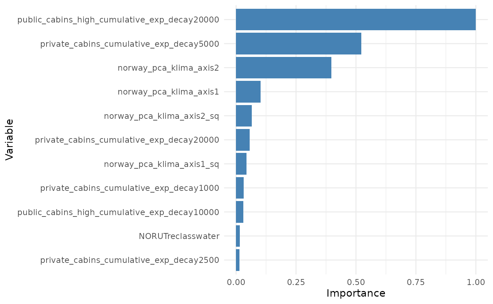
Variable importance might also be computed for groups of variables. For instance, below we group all variables with similar ZOI metric (private cottages or public resorts) and all terms related to the same variable (e.g. quadratic terms).
# Using variable block/type of variable
variable_blocks <- bag_object$var_names |>
strsplit(split = "_cumulative_exp_decay|reclass|, 2)|, 2, raw = TRUE)|_sq") |>
sapply(function(x) x[1]) |>
sub(pattern = "poly(", replacement = "", fixed = TRUE)
variable_blocks## [1] "private_cabins" "private_cabins" "private_cabins"
## [4] "private_cabins" "private_cabins" "private_cabins"
## [7] "private_cabins" "private_cabins" "public_cabins_high"
## [10] "public_cabins_high" "public_cabins_high" "public_cabins_high"
## [13] "public_cabins_high" "public_cabins_high" "public_cabins_high"
## [16] "public_cabins_high" "NORUT" "NORUT"
## [19] "NORUT" "NORUT" "NORUT"
## [22] "NORUT" "NORUT" "NORUT"
## [25] "NORUT" "NORUT" "NORUT"
## [28] "NORUT" "NORUT" "NORUT"
## [31] "norway_pca_klima_axis1" "norway_pca_klima_axis1" "norway_pca_klima_axis2"
## [34] "norway_pca_klima_axis2" "norway_pca_klima_axis3" "norway_pca_klima_axis4"
importance_block <- variable_importance(bag_object,
data = dat,
type = "drop",
order = "asc",
variable_block = variable_blocks)## Warning in variable_importance(bag_object, data = dat, type = "drop", order =
## "asc", : 477 missing observations were removed from the validate set. 73860
## observations were kept.
plot_importance(importance_block, normalize = T)Add interpretation here
Model coefficients
The estimated coefficients from the models in the bag can be seen in
the coef element of the bag. It contains the coefficient of
each model/resample of the bag, for each term of the formula:
# coefficients - already unstandardized by the fit_net_logit function
bag_object$coef[,1:5] |>
head(10)## Resample01 Resample02
## private_cabins_cumulative_exp_decay100 0.000000000 -0.217722480
## private_cabins_cumulative_exp_decay250 0.000000000 2.789575426
## private_cabins_cumulative_exp_decay500 0.000000000 -0.813622269
## private_cabins_cumulative_exp_decay1000 0.000000000 -2.018471424
## private_cabins_cumulative_exp_decay2500 0.000000000 0.756565090
## private_cabins_cumulative_exp_decay5000 0.000000000 -0.273827316
## private_cabins_cumulative_exp_decay10000 -0.013470941 0.018423904
## private_cabins_cumulative_exp_decay20000 -0.002503842 -0.005660242
## public_cabins_high_cumulative_exp_decay100 0.000000000 0.000000000
## public_cabins_high_cumulative_exp_decay250 0.000000000 0.000000000
## Resample03 Resample04
## private_cabins_cumulative_exp_decay100 0.000000000 1.605574863
## private_cabins_cumulative_exp_decay250 0.000000000 0.000000000
## private_cabins_cumulative_exp_decay500 0.000000000 -0.956230606
## private_cabins_cumulative_exp_decay1000 0.000000000 -0.630561170
## private_cabins_cumulative_exp_decay2500 0.000000000 0.465549234
## private_cabins_cumulative_exp_decay5000 -0.056312543 -0.174332629
## private_cabins_cumulative_exp_decay10000 -0.013723062 0.010910344
## private_cabins_cumulative_exp_decay20000 -0.002703108 -0.005957071
## public_cabins_high_cumulative_exp_decay100 0.000000000 0.000000000
## public_cabins_high_cumulative_exp_decay250 0.000000000 0.000000000
## Resample05
## private_cabins_cumulative_exp_decay100 5.155970443
## private_cabins_cumulative_exp_decay250 -4.466015986
## private_cabins_cumulative_exp_decay500 0.000000000
## private_cabins_cumulative_exp_decay1000 -1.064460163
## private_cabins_cumulative_exp_decay2500 0.602427134
## private_cabins_cumulative_exp_decay5000 -0.214032542
## private_cabins_cumulative_exp_decay10000 0.016697510
## private_cabins_cumulative_exp_decay20000 -0.006600537
## public_cabins_high_cumulative_exp_decay100 0.000000000
## public_cabins_high_cumulative_exp_decay250 0.000000000What is really going to be used for prediction, however, are the weighted coefficients. To understand that, it is important to understand that the model weights in the bag are defined based on the validation scores, and they balance the contribution of the coefficients of each model. Below we see the validation scores and weights. We see that all models perform relatively well, which means all of them are given a relative similar weight:
# weights and weighted coefficients
bag_object$validation_score[1:10]## [1] 0.9131054 0.9203894 0.9194246 0.9212400 0.9200966 0.9183340 0.9151591
## [8] 0.9181758 0.9194765 0.9190469
bag_object$weights[1:10]## Resample01 Resample02 Resample03 Resample04 Resample05 Resample06 Resample07
## 0.01973010 0.02004613 0.02000413 0.02008320 0.02003338 0.01995670 0.01981895
## Resample08 Resample09 Resample10
## 0.01994983 0.02000639 0.01998770Now we can get the weighted coefficients for each model, and averaged over models.
# weighted coefficients for each model
bag_object$wcoef[,1:2]## Resample01 Resample02
## private_cabins_cumulative_exp_decay100 0.000000e+00 -0.0043644941
## private_cabins_cumulative_exp_decay250 0.000000e+00 0.0559202039
## private_cabins_cumulative_exp_decay500 0.000000e+00 -0.0163099814
## private_cabins_cumulative_exp_decay1000 0.000000e+00 -0.0404625495
## private_cabins_cumulative_exp_decay2500 0.000000e+00 0.0151662055
## private_cabins_cumulative_exp_decay5000 0.000000e+00 -0.0054891792
## private_cabins_cumulative_exp_decay10000 -2.657830e-04 0.0003693280
## private_cabins_cumulative_exp_decay20000 -4.940106e-05 -0.0001134660
## public_cabins_high_cumulative_exp_decay100 0.000000e+00 0.0000000000
## public_cabins_high_cumulative_exp_decay250 0.000000e+00 0.0000000000
## public_cabins_high_cumulative_exp_decay500 0.000000e+00 -9.3952783723
## public_cabins_high_cumulative_exp_decay1000 0.000000e+00 2.3601156273
## public_cabins_high_cumulative_exp_decay2500 0.000000e+00 -0.4818601011
## public_cabins_high_cumulative_exp_decay5000 3.523046e-02 0.1126046723
## public_cabins_high_cumulative_exp_decay10000 0.000000e+00 0.0842044565
## public_cabins_high_cumulative_exp_decay20000 -5.205598e-02 -0.0922131303
## NORUTreclass11forest -1.241574e-02 -0.0285041463
## NORUTreclassbog -2.014264e-03 0.0029726925
## NORUTreclass12 -7.613544e-03 -0.0103235825
## NORUTreclass13 5.008703e-03 0.0046508807
## NORUTreclass14 2.422116e-03 0.0033569617
## NORUTreclass15 5.028864e-03 -0.0029298083
## NORUTreclass16 4.902450e-03 0.0036349092
## NORUTreclass17 1.788630e-03 0.0006578782
## NORUTreclass18 5.900950e-04 0.0021061214
## NORUTreclass19 0.000000e+00 -0.0024586418
## NORUTreclass20 -4.195502e-03 -0.0092122833
## NORUTreclassglacier -1.696987e-02 -0.0256767528
## NORUTreclasswater -3.444401e-02 -0.0506260406
## NORUTreclassother 0.000000e+00 0.0000000000
## norway_pca_klima_axis1 1.878606e-02 0.0253275529
## norway_pca_klima_axis1_sq -1.185219e-02 -0.0126788069
## norway_pca_klima_axis2 -2.347891e-02 -0.0415971462
## norway_pca_klima_axis2_sq 0.000000e+00 -0.0041635599
## norway_pca_klima_axis3 0.000000e+00 -0.6751071263
## norway_pca_klima_axis4 0.000000e+00 0.8133562429
# weighted average coefficients
bag_object$coef %*% bag_object$weights # weighted average## [,1]
## private_cabins_cumulative_exp_decay100 -0.456828583
## private_cabins_cumulative_exp_decay250 0.452900863
## private_cabins_cumulative_exp_decay500 -0.468653811
## private_cabins_cumulative_exp_decay1000 -0.903680154
## private_cabins_cumulative_exp_decay2500 0.473126528
## private_cabins_cumulative_exp_decay5000 -0.179315177
## private_cabins_cumulative_exp_decay10000 0.004527591
## private_cabins_cumulative_exp_decay20000 -0.004597786
## public_cabins_high_cumulative_exp_decay100 -96.025425007
## public_cabins_high_cumulative_exp_decay250 -4.356691525
## public_cabins_high_cumulative_exp_decay500 -54.322366936
## public_cabins_high_cumulative_exp_decay1000 -5.649409456
## public_cabins_high_cumulative_exp_decay2500 -5.272557691
## public_cabins_high_cumulative_exp_decay5000 -1.875809624
## public_cabins_high_cumulative_exp_decay10000 5.675197007
## public_cabins_high_cumulative_exp_decay20000 -4.713887867
## NORUTreclass11forest -0.741419115
## NORUTreclassbog 0.129552535
## NORUTreclass12 -0.407923738
## NORUTreclass13 0.202352535
## NORUTreclass14 0.304247970
## NORUTreclass15 0.359671384
## NORUTreclass16 0.210433837
## NORUTreclass17 0.096818180
## NORUTreclass18 0.182645472
## NORUTreclass19 -0.109029402
## NORUTreclass20 -0.248141537
## NORUTreclassglacier -1.347011698
## NORUTreclasswater -2.287984502
## NORUTreclassother 0.000000000
## norway_pca_klima_axis1 1.331876146
## norway_pca_klima_axis1_sq -0.597549704
## norway_pca_klima_axis2 -3.462926625
## norway_pca_klima_axis2_sq -0.543032968
## norway_pca_klima_axis3 57.828769971
## norway_pca_klima_axis4 -27.387982850Finally, we can plot the coefficients in each model in different ways
using the oneimpact::plot_coef() function.
explain one by one
# plot weighted coefficients in each model, for all terms
# plot_coef(bag_object)
# different plots
# only for private cabins, by resample, as bars
# for all resamples
# plot_coef(bag_object, terms = "private_cabins_cumulative")
# for one the 3 first models
plot_coef(bag_object, terms = "private_cabins_cumulative", models = 1:3)
# only for private cabins, by resample, as points
plot_coef(bag_object, terms = "private_cabins_cumulative",
plot_type = "points", models = 1:3)
# only for private cabins, as histograms
plot_coef(bag_object, terms = "private_cabins_cumulative",
plot_type = "histogram")## `stat_bin()` using `bins = 30`. Pick better value with `binwidth`.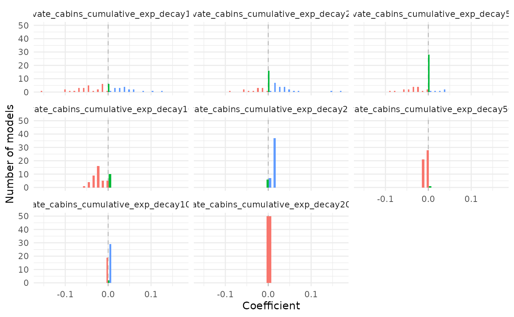
It is possible to see that several of the terms/covariates were removed from the models in some of the resamples, i.e., their estimated coefficients were zero. That is a property of Lasso and Adaptive Lasso regression, that performs variable selection with model fitting.
We can also plot the raw or weighted average coefficients. This can
be done for all terms, or for terms of one specific type of variable. In
this case, for ZOI variables, it is advisable to order them according to
the ZOI radius with the option order_zoi_radius = TRUE.
# plot weighted average coefs - all terms
plot_coef(bag_object, what = "average")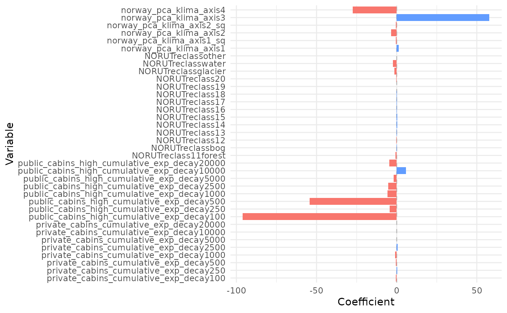
# plot weighted average coefs - public cabins
plot_coef(bag_object, what = "average", terms = "public_cabins",
plot_type = "points", order_zoi_radius = TRUE)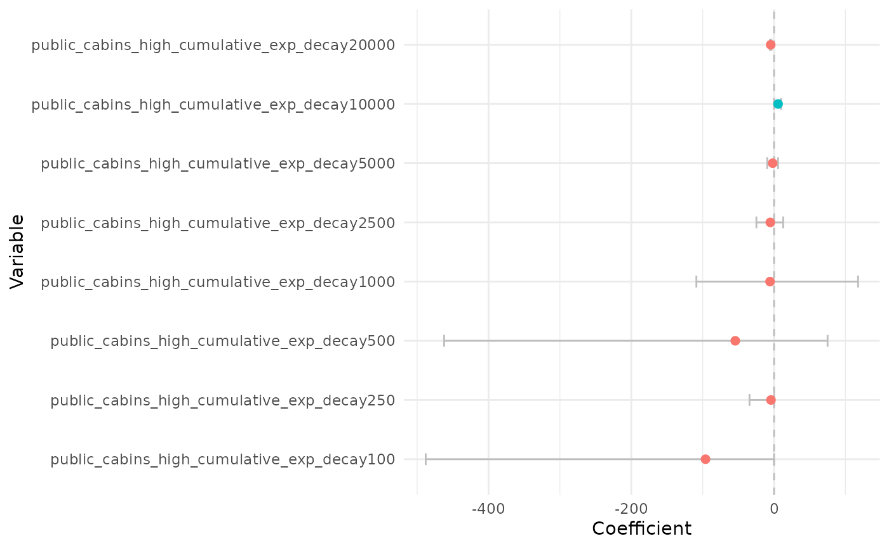
# zoom
plot_coef(bag_object, what = "average", terms = "public_cabins",
plot_type = "points", order_zoi_radius = TRUE) + ylim(-50, 50)## Warning: Removed 2 rows containing missing values or values outside the scale range
## (`geom_point()`).
Plot the effect of each predictor on the response variable
We can now plot the response variables one at a time with the
oneimpact::plot_response function. For that, we fix all
variables at their median values (or mean, or set them to zero; this is
controlled by the baseline parameter) and vary only one or
a few at a time.
PCA1 - continentality
We start by plotting the effect of PCA 1, which is related to a
gradient of continentality. The red line below shows the average
weighted predicted value for the relative selection strength (in the y
axis), which is proportional to the probability of presence of the
species. The black line represents the weighted median predicted value,
and the grey stripe is the 75% weighted confidence interval, also called
the wighted interquartile range. Given the logistic structure of the
habitat selection model we ran, we make the prediction with the argument
type = "logit" to make a logit transformation before
predicting. In this scale, we should interpret values higher than 0.5 as
selection, and values lower than 0.5 as avoidance. However, the variable
responses are more easily interpreted as the gradient of change in
relative selection as the variable increases or decreases.
# plot responses
# PCA1
wQ_probs=c(0.25, 0.5, 0.75) # percentiles for the median and confidence interval
dfvar = data.frame(norway_pca_klima_axis1 = seq(min(bag_object$data_summary$norway_pca_klima_axis1),
max(bag_object$data_summary$norway_pca_klima_axis1),
length.out = 100))
dfvar$norway_pca_klima_axis1_sq = dfvar$norway_pca_klima_axis1**2
# reference median
plot_response(bag_object,
dfvar = dfvar,
data = dat,
type = "exp", ci = TRUE,
wq_probs = wQ_probs)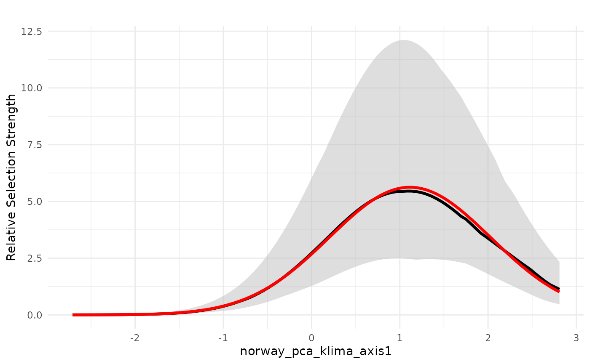
An alternative way to represent the variability in the model
predictions in the bag is also to plot the individual model predictions
as lines, instead of the weighted confidence interval. This is done
setting the parameters individ_pred = TRUE and
ci = FALSE.
# reference median
plot_response(bag_object,
dfvar = dfvar, data = dat,
type = "exp",
indiv_pred = TRUE,
ci = FALSE)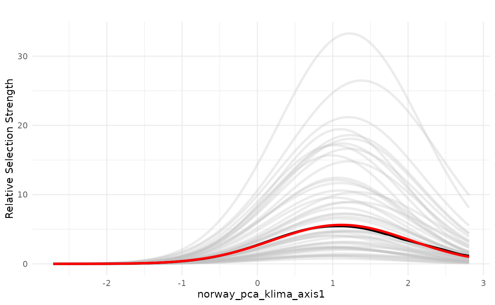
PCA3 - terrain ruggedness
Now we plot the effect of PCA3, which is related to terrain ruggedness.
# plot responses
# PCA3
wQ_probs=c(0.25, 0.5, 0.75)
dfvar = data.frame(norway_pca_klima_axis3 = seq(min(bag_object$data_summary$norway_pca_klima_axis3),
max(bag_object$data_summary$norway_pca_klima_axis3),
length.out = 100))
plot_response(bag_object,
dfvar = dfvar, data = dat,
type = "exp",
ci = FALSE, indiv_pred = TRUE)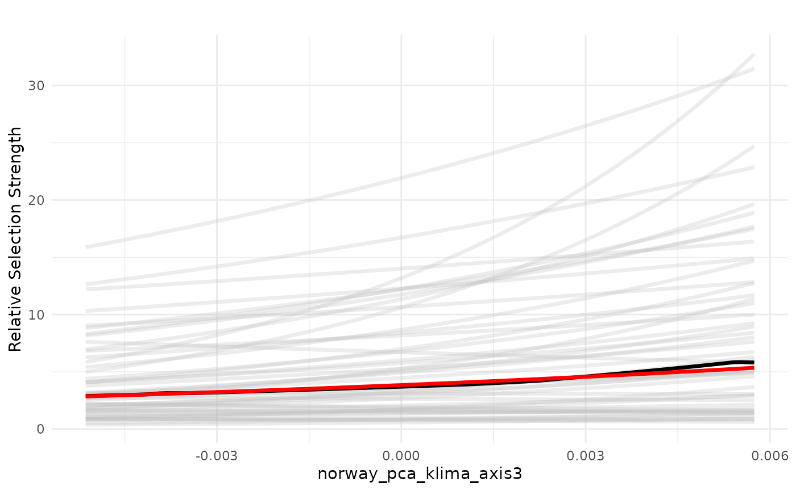
Private cabins
Now we plot the effects of the ZOI of private cabins. Here the
plot_response() function gets all the variables that
contain “private_cabins” in the name. We plot the distance in
logarithmic scale to ease the visualization. We start by plotting the
relative selection strength considering the impact of one single private
cabin.
# ZOI private cabins
dfvar = data.frame(private_cabins = 1e3*seq(0.2, 20, length.out = 100))
plot_response(bag_object,
dfvar = dfvar, data = dat,
type = "exp", zoi = TRUE,
ci = FALSE, indiv_pred = TRUE,
logx = TRUE, ylim = ggplot2::ylim(0, 2))We see that the effects of a private cabin vary from strong effects up to ca. 2.5km to very weak effect, depending on the model in the bag. This means that there is a high variation on the effect size and ZOI of one single private cabin, even though the weighted mean and median effects are negative.
However, we see that both the realized effect size and the ZOI radius increase as the density of cabins increase, and the negative effects gets less uncertain. See below the response plot for a set of 10 and 100 cabins.
# 10 features
plot_response(bag_object,
dfvar = dfvar, data = dat,
n_features = 10,
type = "exp", zoi = TRUE,
ci = FALSE, indiv_pred = TRUE,
logx = TRUE, ylim = ggplot2::ylim(0, 2))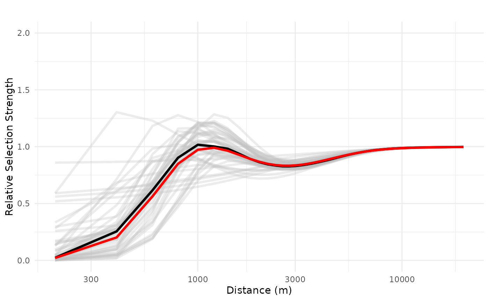
# 100 features
plot_response(bag_object,
dfvar = dfvar, data = dat,
type = "exp", zoi = TRUE,
n_features = 100,
ci = FALSE, indiv_pred = TRUE,
logx = TRUE, ylim = ggplot2::ylim(0, 2))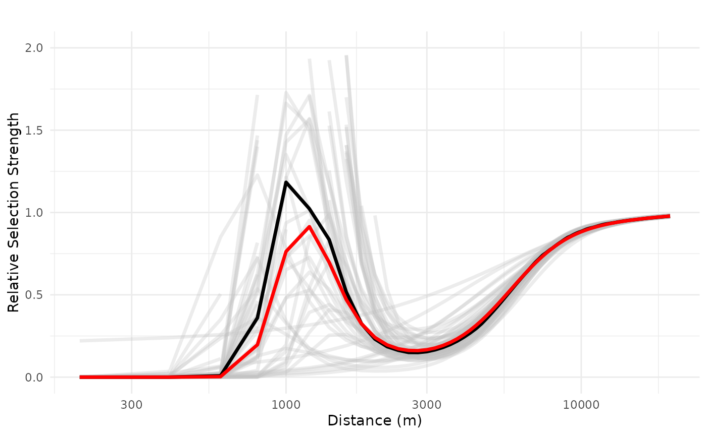
Public resorts
Now we plot the response curves for public resorts. We start by plotting the relative selection strength considering the impact of one single resort.
# ZOI public resorts cumulative
dfvar = data.frame(public_cabins = 1e3*seq(0.2, 20, length.out = 100))
# 1 feature
plot_response(bag_object,
dfvar = dfvar, data = dat,
type = "exp", zoi = TRUE,
n_features = 1,
ci = FALSE, indiv_pred = TRUE,
logx = TRUE, ylim = ggplot2::ylim(0, 2))## Warning: Removed 3 rows containing missing values or values outside the scale range
## (`geom_line()`).We see a negative impact of a public resort, non-linearly, up to 20 km, with high variation in the range 100-2500 m, but with overall average and median negative effects. We can also increase and evaluate the impact of three public resorts in a neighborhood, the maximum observed in the study area, which shows a more consistently negative effect which only starts to decrease after 10 km.
# 3 features
plot_response(bag_object,
dfvar = dfvar, data = dat,
type = "exp", zoi = TRUE,
n_features = 3,
ci = FALSE, indiv_pred = TRUE,
logx = TRUE, ylim = ggplot2::ylim(0, 1))## Warning: Removed 3 rows containing missing values or values outside the scale range
## (`geom_line()`).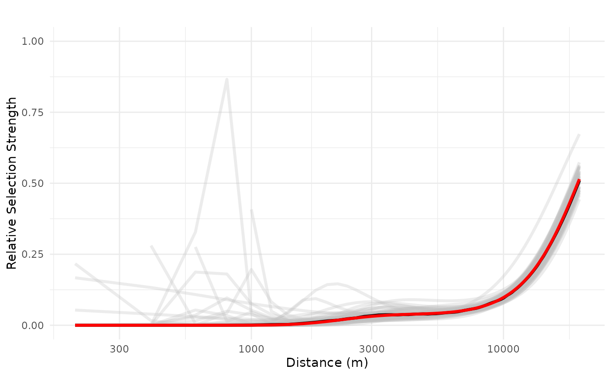
Spatial predictions
Main habitat suitability prediction maps
Now we load the spatial data with the environmental covariates included in the model above - land cover, the four bio-geo-climatic PCAs, and the different ZOI variables for private and public cabins. The data is loaded for the whole study area - the Hardangervidda wild reindeer area in Norway and its surroundings.
(f <- system.file("raster/rast_predictors_hardanger_500m.tif", package = "oneimpact"))## [1] "/home/runner/work/_temp/Library/oneimpact/raster/rast_predictors_hardanger_500m.tif"
rast_predictors <- terra::rast(f)We can use the function oneimpact::bag_predict_spat() to
make spatial predictions based on the bag of fitted models. It is
possible to predict the weighted average suitability (if
what = "mean"), the weighted median suitability and
weighted percentiles of the suitability (if
what = "median"), to represent its uncertainty, and it is
also possible to create individual predictions for each model in the bag
(if what = "ind"). Below we compute the first two options
and start by plotting the weighted average habitat suitability, which
shows a similar pattern to the habitat suitability map presented in
Niebuhr et al. 2023 (Fig. 5f).
pred <- bag_predict_spat(bag = bag_object, data = rast_predictors,
input_type = "rast", what = c("mean", "median"))
# if rast_df was a data.frame
# pred <- bag_predict_spat(bag = bag_object, data = rast_df,
# gid = "cell", coords = c("x", "y"),
# crs = "epsg:25833")The function produces a list with:
-
grid, the data used for prediction (as adata.frame); -
weights, the weights of each model in the bag; - three
SpatRasterobjects, possibly with multiple layers, with the weighted average prediction, the weighted median prediction (+ measures of uncertainty), and the individual model predictions for the habitat suitability. Which elements are returned depend on the values included in thewhatargument.
Below we plot the first map, the weighted average prediction.
# weighted average
map1 <- tmap::tm_shape(pred[["r_weighted_avg_pred"]]) +
tmap::tm_raster(palette = "Greens", style = "cont", title = "Suitability") +
tmap::tm_layout(legend.position = c("LEFT", "BOTTOM"),
main.title = "Weighted average habitat suitability",
main.title.position = c("center"),
main.title.size = 1) +
# tmap::tm_shape(study_area_v) +
# tmap::tm_borders() +
tmap::tm_compass()## ## ── tmap v3 code detected ───────────────────────────────────────────────────────## [v3->v4] `tm_raster()`: instead of `style = "cont"`, use col.scale =
## `tm_scale_continuous()`.
## ℹ Migrate the argument(s) 'palette' (rename to 'values') to
## 'tm_scale_continuous(<HERE>)'
## [v3->v4] `tm_raster()`: migrate the argument(s) related to the legend of the
## visual variable `col` namely 'title' to 'col.legend = tm_legend(<HERE>)'
## [v3->v4] `tm_layout()`: use `tm_title()` instead of `tm_layout(main.title = )`
print(map1)## [cols4all] color palettes: use palettes from the R package cols4all. Run
## `cols4all::c4a_gui()` to explore them. The old palette name "Greens" is named
## "brewer.greens"
The weighted median suitability also produces a quite similar
prediction. It is by default stored in as the first layer of the raster
pred$r_ind_summ_pred.
# average/SD of individual pred
names(pred[["r_ind_summ_pred"]]) <- c("Median", "IQR", "QCV")
map2 <- tmap::tm_shape(pred[["r_ind_summ_pred"]][[1]]) +
tmap::tm_raster(palette = "Greens", style = "cont", title = "Suitability") +
tmap::tm_layout(legend.position = c("LEFT", "BOTTOM"),
main.title = "Weighted median habitat suitability",
main.title.position = c("center"),
main.title.size = 1) +
# tmap::tm_shape(study_area_v) +
# tmap::tm_borders() +
tmap::tm_compass()## ## ── tmap v3 code detected ───────────────────────────────────────────────────────## [v3->v4] `tm_raster()`: instead of `style = "cont"`, use col.scale =
## `tm_scale_continuous()`.
## ℹ Migrate the argument(s) 'palette' (rename to 'values') to
## 'tm_scale_continuous(<HERE>)'
## [v3->v4] `tm_raster()`: migrate the argument(s) related to the legend of the
## visual variable `col` namely 'title' to 'col.legend = tm_legend(<HERE>)'
## [v3->v4] `tm_layout()`: use `tm_title()` instead of `tm_layout(main.title = )`
print(map2)## [cols4all] color palettes: use palettes from the R package cols4all. Run
## `cols4all::c4a_gui()` to explore them. The old palette name "Greens" is named
## "brewer.greens"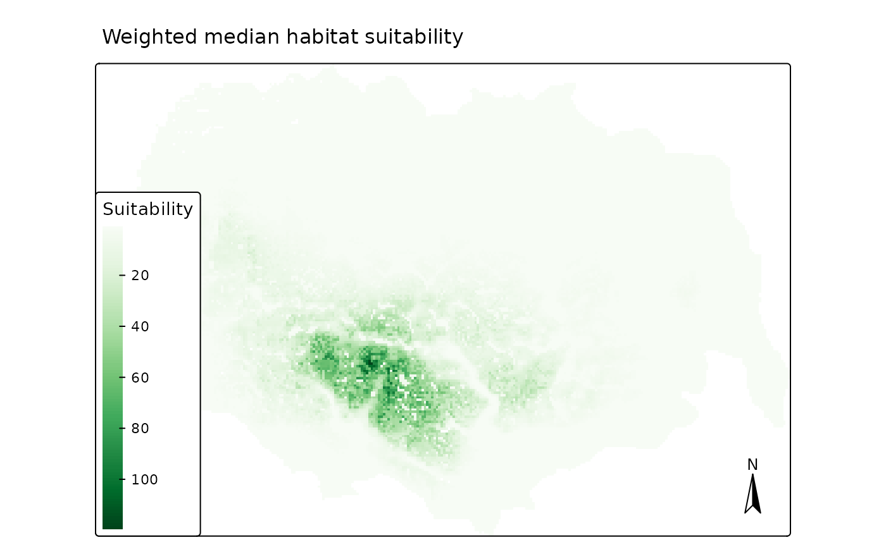
When the argument what = "median" is used in the
bag_predict_spat() function, it also allows us to compute
measures of uncertainty. The first measure (stored as the second layer
of the pred$r_ind_summ_pred raster object) is the range of
variation between the weighted percentile individual modeled
suitabilities. By default, it computes the interquartile range (IQR, the
different between the 25 and 75 weighted predicted percentiles), but
other values might be selected through the argument
uncertainty_quantiles in the
bag_predict_spat() function.
map3 <- tmap::tm_shape(pred[["r_ind_summ_pred"]][[2]]) +
tmap::tm_raster(palette = "Reds", style = "cont", title = "Uncertainty") +
tmap::tm_layout(legend.position = c("LEFT", "BOTTOM"),
main.title = "Interquartile range of the estimated suitability",
main.title.position = c("center"),
main.title.size = 1) +
# tmap::tm_shape(study_area_v) +
# tmap::tm_borders() +
tmap::tm_compass()## ## ── tmap v3 code detected ───────────────────────────────────────────────────────## [v3->v4] `tm_raster()`: instead of `style = "cont"`, use col.scale =
## `tm_scale_continuous()`.
## ℹ Migrate the argument(s) 'palette' (rename to 'values') to
## 'tm_scale_continuous(<HERE>)'
## [v3->v4] `tm_raster()`: migrate the argument(s) related to the legend of the
## visual variable `col` namely 'title' to 'col.legend = tm_legend(<HERE>)'
## [v3->v4] `tm_layout()`: use `tm_title()` instead of `tm_layout(main.title = )`
print(map3)## [cols4all] color palettes: use palettes from the R package cols4all. Run
## `cols4all::c4a_gui()` to explore them. The old palette name "Reds" is named
## "brewer.reds"We see that the largest absolute variation between individual model predictions is in the areas with high predicted average/median suitability, which are the areas far away from all types of tourist cabins.
The function also computes (by default) the quartile coefficient of
variation (QCV), which is defined as the ratio
,
where
is the x% percentile. We see now that this measures
highlights the relative (not the absolute) variation in the prediction,
which occurs close to the two types of cabins and in the areas of high
variation in the other predictors as well.
map4 <- tmap::tm_shape(pred[["r_ind_summ_pred"]][[3]]) +
tmap::tm_raster(palette = "Reds", style = "cont", title = "Uncertainty") +
tmap::tm_layout(legend.position = c("LEFT", "BOTTOM"),
main.title = "Quartile coefficient of variation of the estimated suitability",
main.title.position = c("center"),
main.title.size = 1) +
# tmap::tm_shape(study_area_v) +
# tmap::tm_borders() +
tmap::tm_compass()## ## ── tmap v3 code detected ───────────────────────────────────────────────────────## [v3->v4] `tm_raster()`: instead of `style = "cont"`, use col.scale =
## `tm_scale_continuous()`.
## ℹ Migrate the argument(s) 'palette' (rename to 'values') to
## 'tm_scale_continuous(<HERE>)'
## [v3->v4] `tm_raster()`: migrate the argument(s) related to the legend of the
## visual variable `col` namely 'title' to 'col.legend = tm_legend(<HERE>)'
## [v3->v4] `tm_layout()`: use `tm_title()` instead of `tm_layout(main.title = )`
print(map4)## [cols4all] color palettes: use palettes from the R package cols4all. Run
## `cols4all::c4a_gui()` to explore them. The old palette name "Reds" is named
## "brewer.reds"Predictor impact maps
We can also predict the impact of each individual covariate alone, by
multiplying the covariates by their respective estimated coefficients.
This can be done through the function
oneimpact::bag_predict_spat_vars(). Here, the
predictor_table_zoi computed above through the
add_zoi_formula() function can be used.
Similarly to the bag_predict_spat() function, the
bag_predict_spat_vars() function produces a list with:
-
vars, the names of the variables whose impact was predicted (typically a pattern extracted from the predictor table, which is similar for the same ZOI variables which change only on radii or for variables with linear and quadratic terms, for instance); -
grid, a list of data.frames with the variables used for the prediction of each variable response; -
weights, the weighted of each model in the bag; - three elements with the weighted average, median, and individual
predictions; each of them consists of a list of
SpatRasterobjects, one for each variable list invars.
To make it fast, we produce only the mean weighted prediction for the partial effect of each of the covariates.
# variables to be considered
predictor_table_zoi$variable## [1] "private_cabins_" "private_cabins_"
## [3] "private_cabins_" "private_cabins_"
## [5] "private_cabins_" "private_cabins_"
## [7] "private_cabins_" "private_cabins_"
## [9] "public_cabins_high_" "public_cabins_high_"
## [11] "public_cabins_high_" "public_cabins_high_"
## [13] "public_cabins_high_" "public_cabins_high_"
## [15] "public_cabins_high_" "public_cabins_high_"
## [17] "NORUTreclass" "norway_pca_klima_axis1"
## [19] "norway_pca_klima_axis1_sq" "norway_pca_klima_axis2"
## [21] "norway_pca_klima_axis2_sq" "norway_pca_klima_axis3"
## [23] "norway_pca_klima_axis4"
# correct quadratic terms
predictor_table_zoi$variable <- gsub("poly(", "", predictor_table_zoi$variable, fixed = T) |>
gsub(pattern = ", 2, raw = TRUE)|_sq", replacement = "")
pred_vars <- bag_predict_spat_vars(bag = bag_object,
data = rast_predictors,
predictor_table_zoi = predictor_table_zoi,
prediction_type = "exp",
input_type = "rast", what = c("mean"))
str(pred_vars, max.level = 2)## List of 6
## $ vars :List of 7
## ..$ : chr "private_cabins_"
## ..$ : chr "public_cabins_high_"
## ..$ : chr "NORUTreclass"
## ..$ : chr "norway_pca_klima_axis1"
## ..$ : chr "norway_pca_klima_axis2"
## ..$ : chr "norway_pca_klima_axis3"
## ..$ : chr "norway_pca_klima_axis4"
## $ grid :List of 7
## ..$ :'data.frame': 38204 obs. of 4 variables:
## ..$ :'data.frame': 38204 obs. of 4 variables:
## ..$ :'data.frame': 38204 obs. of 4 variables:
## ..$ :'data.frame': 38204 obs. of 4 variables:
## ..$ :'data.frame': 38204 obs. of 4 variables:
## ..$ :'data.frame': 38204 obs. of 4 variables:
## ..$ :'data.frame': 38204 obs. of 4 variables:
## $ weights : Named num [1:50] 0.0197 0.02 0.02 0.0201 0.02 ...
## ..- attr(*, "names")= chr [1:50] "Resample01" "Resample02" "Resample03" "Resample04" ...
## $ r_weighted_avg_pred:List of 7
## ..$ :S4 class 'SpatRaster' [package "terra"]
## ..$ :S4 class 'SpatRaster' [package "terra"]
## ..$ :S4 class 'SpatRaster' [package "terra"]
## ..$ :S4 class 'SpatRaster' [package "terra"]
## ..$ :S4 class 'SpatRaster' [package "terra"]
## ..$ :S4 class 'SpatRaster' [package "terra"]
## ..$ :S4 class 'SpatRaster' [package "terra"]
## $ r_ind_summ_pred : NULL
## $ r_ind_pred : NULLWe can start by plotting the expected impact of one of the bio-geo-climatic PCAs (PCA3) and the land cover layer, as an example. Here, we have plotted the responses in the exponential scale, for simplicity. This means that values above 1 represent selection, and values below 1 represent avoidance.
plots <- lapply(c(3,4,6),
function(x) #plot(x, main = names(x), col = map.pal("viridis")))
tmap::tm_shape(pred_vars$r_weighted_avg_pred[[x]]) +
tmap::tm_raster(palette = "PiYG", style = "cont",
title = "Effect", breaks = seq(0, 2, 0.1),
midpoint = 1) +
tmap::tm_layout(#legend.position = c("LEFT", "BOTTOM"),
legend.outside = TRUE,
main.title = names(pred_vars$vars[x]),#"Weighted average effect of predictors",
main.title.position = c("center"),
main.title.size = 1) +
tmap::tm_compass())## ## ── tmap v3 code detected ───────────────────────────────────────────────────────## [v3->v4] `tm_raster()`: instead of `style = "cont"`, use col.scale =
## `tm_scale_continuous()`.
## ℹ Migrate the argument(s) 'breaks' (rename to 'ticks'), 'midpoint', 'palette'
## (rename to 'values') to 'tm_scale_continuous(<HERE>)'
## For small multiples, specify a 'tm_scale_' for each multiple, and put them in a
## list: 'col'.scale = list(<scale1>, <scale2>, ...)'
## [v3->v4] `tm_raster()`: migrate the argument(s) related to the legend of the
## visual variable `col` namely 'title' to 'col.legend = tm_legend(<HERE>)'
## [v3->v4] `tm_raster()`: migrate the argument(s) related to the legend of the
## visual variable `col` namely 'title' to 'col.legend = tm_legend(<HERE>)'
## [v3->v4] `tm_raster()`: migrate the argument(s) related to the legend of the
## visual variable `col` namely 'title' to 'col.legend = tm_legend(<HERE>)'
print(plots)## [[1]]## [cols4all] color palettes: use palettes from the R package cols4all. Run
## `cols4all::c4a_gui()` to explore them. The old palette name "PiYG" is named
## "brewer.pi_yg"
## [plot mode] fit legend/component: Some legend items or map compoments do not
## fit well, and are therefore rescaled.
## ℹ Set the tmap option `component.autoscale = FALSE` to disable rescaling.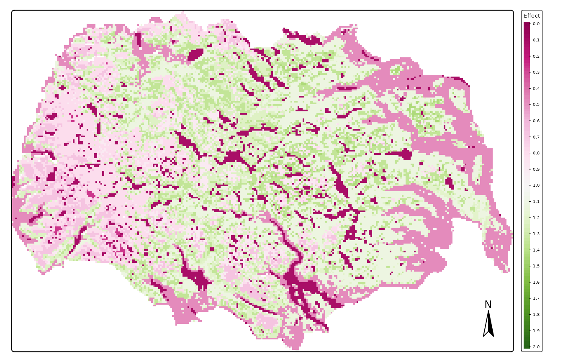
##
## [[2]]## [cols4all] color palettes: use palettes from the R package cols4all. Run
## `cols4all::c4a_gui()` to explore them. The old palette name "PiYG" is named
## "brewer.pi_yg"
## [plot mode] fit legend/component: Some legend items or map compoments do not
## fit well, and are therefore rescaled.
## ℹ Set the tmap option `component.autoscale = FALSE` to disable rescaling.##
## [[3]]## [cols4all] color palettes: use palettes from the R package cols4all. Run
## `cols4all::c4a_gui()` to explore them. The old palette name "PiYG" is named
## "brewer.pi_yg"
## [plot mode] fit legend/component: Some legend items or map compoments do not
## fit well, and are therefore rescaled.
## ℹ Set the tmap option `component.autoscale = FALSE` to disable rescaling.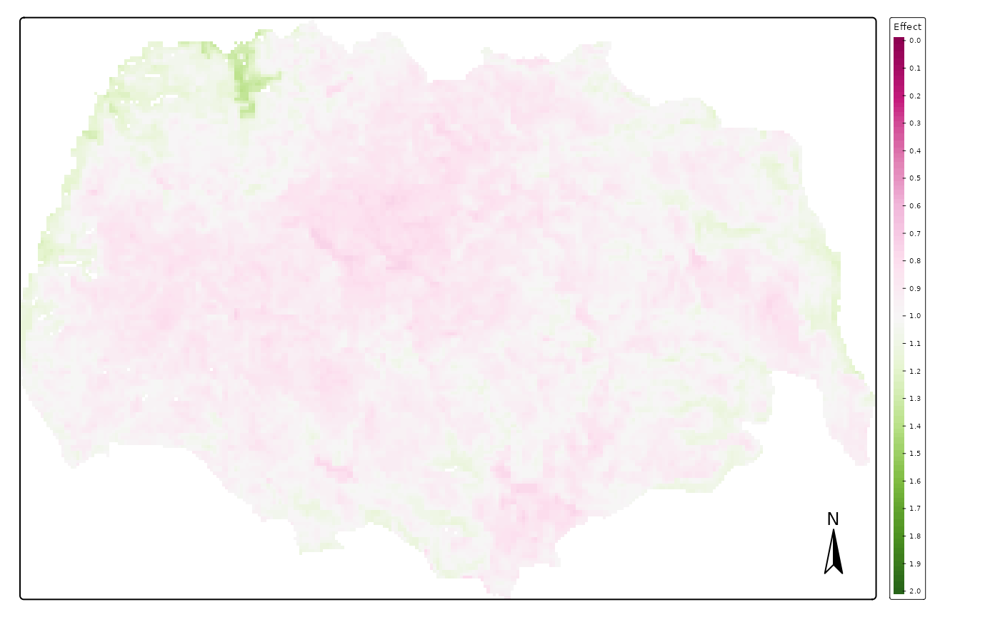
We see in these images that the effect of PC1 (continentality) is the largest between those variables, followed by that of land cover and effect of PCA3 (terrain ruggedness). We also see that reindeer in summer avoid the lower lands with forests and climates which are too oceanic (in the West).
We can now plot the spatial impact of private cabins and public cabins. As shown above, the effect of both types of infrastructure is very strong.
# private cabins
map_plot <- pred_vars$r_weighted_avg_pred[[1]]
map1 <- tmap::tm_shape(map_plot) +
tmap::tm_raster(palette = "PiYG", style = "cont",
title = "Effect", breaks = seq(0, 2, 0.1),
midpoint = 1) +
tmap::tm_layout(#legend.position = c("LEFT", "BOTTOM"),
legend.outside = TRUE,
main.title = names(map_plot),#"Weighted average effect of predictors",
main.title.position = c("center"),
main.title.size = 1) +
tmap::tm_compass()## ## ── tmap v3 code detected ───────────────────────────────────────────────────────## [v3->v4] `tm_raster()`: instead of `style = "cont"`, use col.scale =
## `tm_scale_continuous()`.
## ℹ Migrate the argument(s) 'breaks' (rename to 'ticks'), 'midpoint', 'palette'
## (rename to 'values') to 'tm_scale_continuous(<HERE>)'
## For small multiples, specify a 'tm_scale_' for each multiple, and put them in a
## list: 'col'.scale = list(<scale1>, <scale2>, ...)'
## [v3->v4] `tm_raster()`: migrate the argument(s) related to the legend of the
## visual variable `col` namely 'title' to 'col.legend = tm_legend(<HERE>)'
## [v3->v4] `tm_layout()`: use `tm_title()` instead of `tm_layout(main.title = )`
print(map1)## [cols4all] color palettes: use palettes from the R package cols4all. Run
## `cols4all::c4a_gui()` to explore them. The old palette name "PiYG" is named
## "brewer.pi_yg"
## [plot mode] fit legend/component: Some legend items or map compoments do not
## fit well, and are therefore rescaled.
## ℹ Set the tmap option `component.autoscale = FALSE` to disable rescaling.
# public cabins
map_plot <- pred_vars$r_weighted_avg_pred[[2]]
map2 <- tmap::tm_shape(map_plot) +
tmap::tm_raster(palette = "PiYG", style = "cont",
title = "Effect", breaks = seq(0, 2, 0.1),
midpoint = 1) +
tmap::tm_layout(
legend.outside = TRUE,
main.title = names(map_plot),#"Weighted average effect of predictors",
main.title.position = c("center"),
main.title.size = 1) +
tmap::tm_compass()##
## ── tmap v3 code detected ───────────────────────────────────────────────────────
## [v3->v4] `tm_raster()`: instead of `style = "cont"`, use col.scale =
## `tm_scale_continuous()`.
## ℹ Migrate the argument(s) 'breaks' (rename to 'ticks'), 'midpoint', 'palette'
## (rename to 'values') to 'tm_scale_continuous(<HERE>)'
## For small multiples, specify a 'tm_scale_' for each multiple, and put them in a
## list: 'col'.scale = list(<scale1>, <scale2>, ...)'[v3->v4] `tm_raster()`: migrate the argument(s) related to the legend of the
## visual variable `col` namely 'title' to 'col.legend = tm_legend(<HERE>)'[v3->v4] `tm_layout()`: use `tm_title()` instead of `tm_layout(main.title = )`
print(map2)## [cols4all] color palettes: use palettes from the R package cols4all. Run
## `cols4all::c4a_gui()` to explore them. The old palette name "PiYG" is named
## "brewer.pi_yg"
## [plot mode] fit legend/component: Some legend items or map compoments do not
## fit well, and are therefore rescaled.
## ℹ Set the tmap option `component.autoscale = FALSE` to disable rescaling.